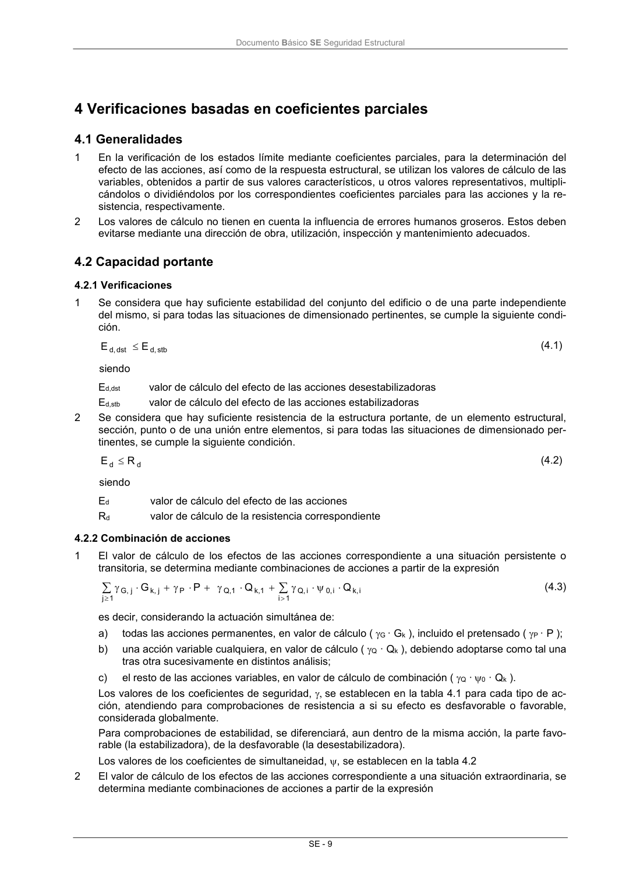

DB-SE · Fragmento de PDF p15 · versión 2019-12-20 · capa oficial
Formatos: JSON compacto · Markdown · PDF fuente
Ámbito del documento · texto del ámbito · documento y tablas
ID técnico a0042 · PDF pág. 15 · jerarquía no validada por persona · no es capítulo: sin_linea_de_encabezado · padre: raíz · literal original en el contenido: «4 Verificaciones basadas en coeficientes parciales 4.1 Generalidades»
4 Verificaciones basadas en coeficientes parciales 4.1 Generalidades 4.1 Generalidades 1 En la verificación de los estados límite mediante coeficientes parciales, para la determinación del efecto de las acciones, así como de la respuesta estructural, se utilizan los valores de cálculo de las variables, obtenidos a partir de sus valores característicos, u otros valores representativos, multipli- cándolos o dividiéndolos por los correspondientes coeficientes parciales para las acciones y la re- sistencia, respectivamente. 2 Los valores de cálculo no tienen en cuenta la influencia de errores humanos groseros. Estos deben evitarse mediante una dirección de obra, utilización, inspección y mantenimiento adecuados.

PDF fuente redistribuible: copia fiel enlazada en esta página (SHA256 verificado).